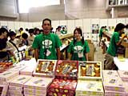
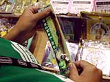
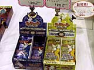
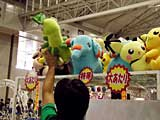
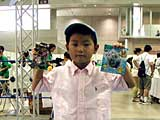

本日25日より、いよいよ物販コーナーが開店! 一般ユーザーが、貴重な任天堂グッズを購入できるチャンスがやってまいりました。
|
 売り場のスタッフの方に売れ筋の品を聞いてみたところ、まず食べ物では、ポケモン人形焼のチョコカスタード味が人気があるそうです。ポケモン人形焼には数種類の味が用意されているのですが、このチョコカスタード味が一番売れているとのこと。もしかしてポケモンファンは甘党が多いのかな?
|
 グッズでは、人形、ぬいぐるみ、ストラップなど、圧倒的にセレビィものが売れている様子です。恐るべしセレビィ人気。このあたり、映画の影響も大きいのかもしれません。
|
 ポケモン関係以外では、カードヒーローカードマスターセレクションも好調な売上を見せているという話。ポケモンカードに勝るとも劣らない人気商品のようですね。
|
 そして物販コーナーといえば、忘れてはいけないのがポケモンの“一番くじ”です。ハズレなしのこの一番くじは、特等が当たると、ビッグサイズのポケモンのぬいぐるみがゲットできます。実際に今日も取材中に、元気なお母さんが見事特等を当てていました(写真のぬいぐるみ参照)。スタッフの方は、「今日は、私が見ているだけでも、6回は特等が出ていますよ」と話してくれました。26日に来場するポケモンファンは、ぜひとも一番くじにチャレンジしてみてはいかかでしょうか?
|
 最後に、買い物帰りのお客さんにもちょっとお話を聞いてみました。世田谷からお母さんと一緒にやってきた関根大揮(ひろき)くん(7歳)は、『ポケモン 金』と『ポケモン クリスタル』をコンプリートしているという大のポケモンファン。本日、大揮くんが購入した品は、ルギアのキーホルダーとポケモンカードでした。「一番好きなポケモンは何?」と尋ねると、「どっちにしようかなぁ」と困った表情を見せる大揮くん。「2匹でもいいよ」と言うと、「ルギアとミュウツー」と答えてくれました。順番なんてつけられないほど、きっと同じくらいこの2匹が大好きなんですね。
|